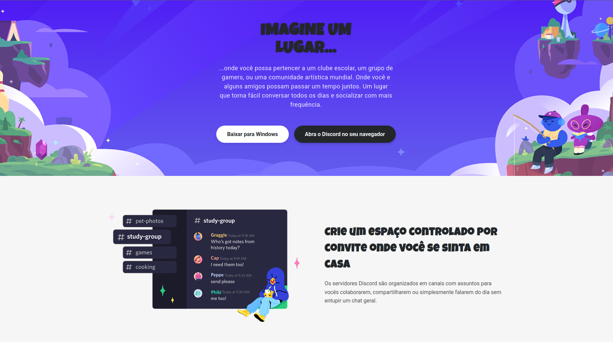
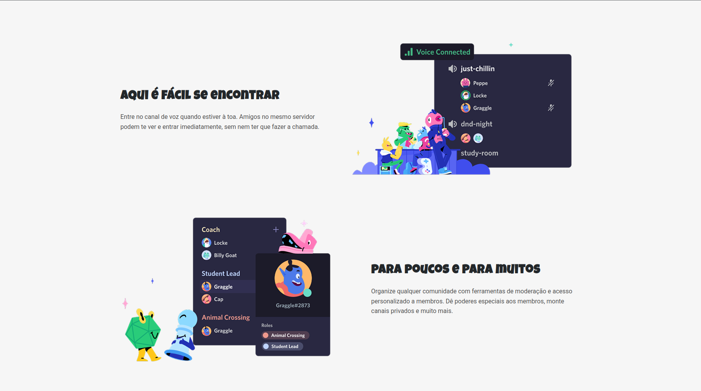
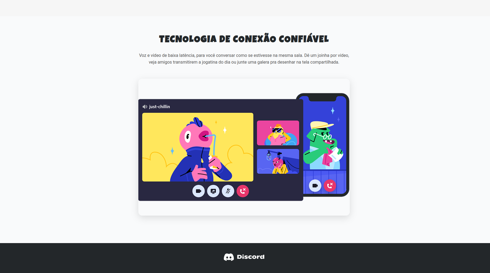

Recréation du site Discord



Description
Ce projet consiste à reproduire une page inspirée de la plateforme Discord, en utilisant uniquement HTML et CSS. L’objectif était de créer une interface responsive, sémantique et fidèle aux concepts visuels de Discord, tout en respectant les bonnes pratiques de développement web.
Informations
- Durée : 2 semaines
- Personnes : Projet individuel
- Type : Défi personnel
Fonctionnalités
- Interface organisée en sections inspirées de Discord.
- Design responsive adapté aux écrans mobiles, tablettes et desktop.
- Illustrations et icônes intégrées depuis un fichier Figma.
- Structure HTML sémantique et code CSS propre.
Structure de la page
- Header Hero : message de bienvenue et illustration principale.
- Sections de contenu : explication des canaux texte, vocaux, modération et outils.
- Technologie fiable : mise en avant des appels vidéo et du partage d’écran.
- Footer : logo Discord pour conclure la page.
Technologies utilisées
- HTML5 pour la structure sémantique.
- CSS3 avec Flexbox pour un layout responsive.
- Google Fonts : “Luckiest Guy” et “Roboto”.
- Images et icônes exportées depuis Figma.